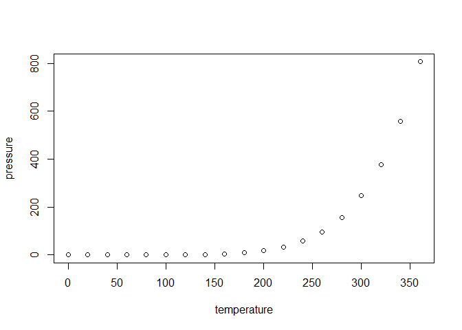

The goal of noclocksR is to …
Installation
You can install the development version of noclocksR from GitHub with:
# install.packages("devtools")
devtools::install_github("noclocks/noclocksR")Example
This is a basic example which shows you how to solve a common problem:
# library(noclocksR)
## basic example codeWhat is special about using README.Rmd instead of just README.md? You can include R chunks like so:
summary(cars)
#> speed dist
#> Min. : 4.0 Min. : 2.00
#> 1st Qu.:12.0 1st Qu.: 26.00
#> Median :15.0 Median : 36.00
#> Mean :15.4 Mean : 42.98
#> 3rd Qu.:19.0 3rd Qu.: 56.00
#> Max. :25.0 Max. :120.00You’ll still need to render README.Rmd regularly, to keep README.md up-to-date. devtools::build_readme() is handy for this.
You can also embed plots, for example:

In that case, don’t forget to commit and push the resulting figure files, so they display on GitHub and CRAN.